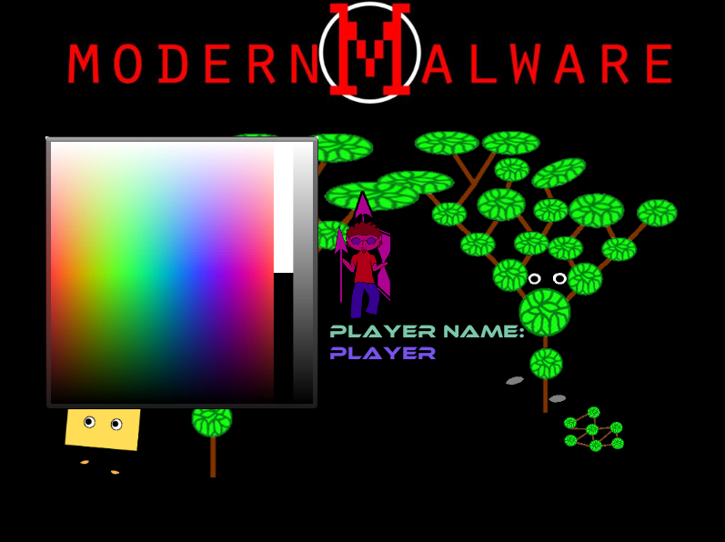
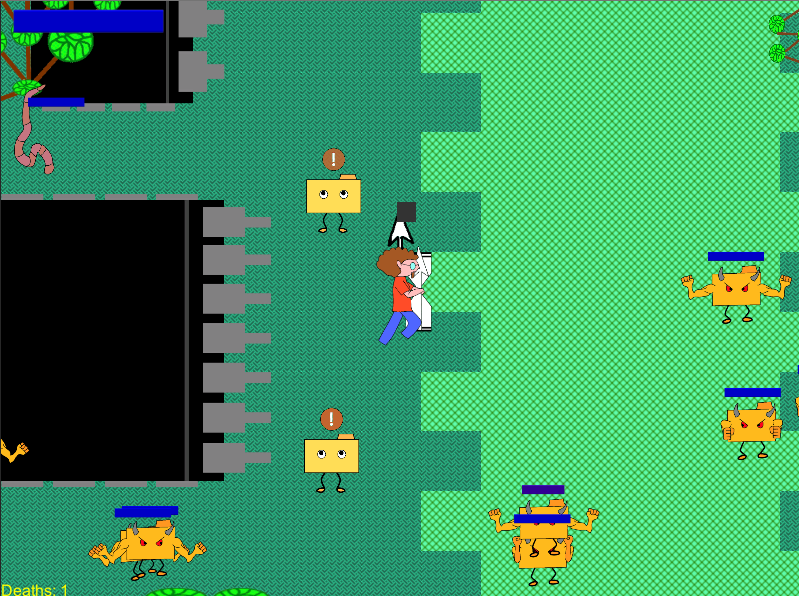
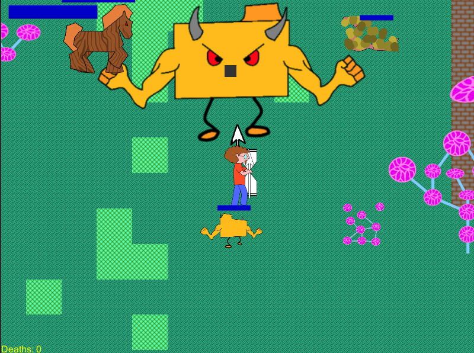

Producer/Designer
Candelaria Herrera
Developers (385 students) Adam Burkhalter
Micahel Hsieh
Micah Lee
Terry Rogers
Sound Engineer
Michael Martz
Artists
Candelaria Herrera (Gameplay)
Ashley Calkins (Menus / HUD)
Thad Allen (Comic Panels)
Kate Soudbinina (Motion Graphics)
Adam Robinson (Environment)
Robin Crew (Concept)
Project Sloth:
Epoch Escape is a stealth based adventure puzzle game set in space. 6 heroes have found themselves suddenly zapped up by alien scientists from across time and held on their space ship for scientific testing. For our heroes, their mission to escape their captures, make their way back to the time machine and find their way home.
Players navigate through the spaceship floors in search of the power core fragments in order to unlock the door to the next level. In their quest, players must keep their detection low by evading security cameras and alien guards. Along the way, there are items throughout the game that help the player fight back against the aliens as well as character specific abilities unique to each character. These items are the key to your “epoch” escape.
Download Game (PC)

Download Game (Mac)
Download Game Proposal

Download Design Document

Curtis Andersson,
Shane Barker,
John Louie,
Dave Madden,
Adam Robinson,
Derek Willms
Dual Shot is an intense, fast-paced, competitive attack & defend twin-stick shooter. Players are pitted
against each other in a grand battle for space supremacy. Ships must simultaneously defend their base
while attacking their opponent. Ships can push asteroids into their enemy's base or destroy
incoming asteroids for potential power-ups.
There is 1v1, 2v2, and 4-player free-for-all local multiplayer modes. Survive an
endless bombardment of asteroids to reign supreme and ensure the survival of your city.
This game requires at least two players and one controller.
Download and play the game
Download original game proposal
Download design document


Gary Mixson,
Brandan Haertel,
Erick House,
AaronWhiting
Sound by Miah McBride
From the Electric Shepherds comes the next evolution in tower defense games.
We have created a fast paced multiplayer tower attack game that will blow your mind.
Play against your friends and find out who the master of the minions truly is. Download and play the games yourself!
Download and play the game
(~70.31MB)View original game proposal
View design document


Chad Hickenbottom
Rodelle Ladia
Angela Liu
James Murphree
Time Uprising is a real time tactical defense game where King Rodelle must control troops, upgrade towers, and use abilities to fend off waves of giant raptors and peasants equipped with pitchforks. Travel through time defending your dynasty from destruction and unravelling the mystery of the sudden peasant uprising.
Download and play the Game (PC)
(~58MB)
Download original game proposal

Download design document
Sota Ogo,
Joseph Lee,
ChongTae Chon
HyunGyu Kim Samuel, and
Stacie Rajkovics
Crystal Realm is a turn-based competitive board game based on YootNori, a Korean traditional game.
- Throw your 4 crystals to get magic cards with numbers to advance your characters.
- Complete the map with your champion and 3 minions faster than your opponent to win the game!
- Land on the Red Key nodes to take shortcuts.
- Land on the Opponents character to knock them out.
- Stack on your character to move them together with one Roll.
- Compete your opponent with unique skills!
Enjoy full 3D animated characters and the seamless fantasy map!
Note: This game supposed to be played by 2 players.
Download and play the game for Windows
(~66MB)
Download and play the game for Mac OSX
(~69MB)
Download original game proposal (Slideshow)
Download design document
Jason Dailey
Joseph Hoff
Melissa Kjelgaard
Brandon Roth
Emmett Scout
A comedy RPG set in a fantastical world of a computer. Battle through various corruption, spyware, and viruses in your quest to find the system administrator and restore peace to your computer.
Download and play the game
(~20MB).
Download the original game proposal (for an entirely different game...)
Download design document
  